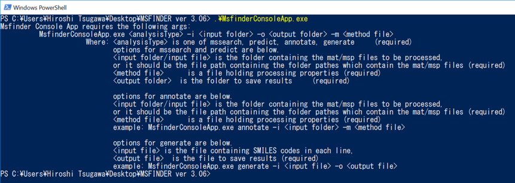

MS-FINDER
Console application
Tutorial
This is a quick tutorial of MS-FINDER console application.
The main processer is stored in the same folder of MS-FINDER GUI program.
Just type MsfinderConsoleApp.exe to show the help.

There are two options in MSFINDER console application: mssearch and predict.
mssearch is a spectral search option using EI-MS or MS/MS spectral databases. The integrated score of dot product, reverse dot product, and presence percentage is used for ranking.
predict is in silico formula/structure elucidation method. The same algorithm in MS-FINDER GUI is used.
mssearch is a spectral search option using EI-MS or MS/MS spectral databases. The integrated score of dot product, reverse dot product, and presence percentage is used for ranking.
predict is in silico formula/structure elucidation method. The same algorithm in MS-FINDER GUI is used.
Note 1
All of the results will be generated in single ASCII format file. And the generated folders can also be imported in MS-FINDER GUI application.
Note 2
The same parameter format as MS-FINDER GUI is used. See MSFINDER.INI as an example.
Note 3
about -i option: if a folder path is typed, all of MSP and MAT format files in the directory is analyzed. On the other hand, if a file path where the targeted folder pathes are written is typed, all of MSP and MAT files included in the folder pathes is analyzed.
1. mssearch
The program accepts msp or mat format files (see MS-FINDER tutorial).
The demonstration is just for a basic processing using internal MassBank database.
The demonstration is just for a basic processing using internal MassBank database.
Example
> MsfinderConsoleApp.exe mssearch -i .\Data\ -o .\ -m .\MsfinderConsoleApp-Param.txt
2. predict
The program accepts msp or mat format files (see MS-FINDER tutorial).
The demonstration is just for a basic processing using internal structure databases. The user defined structure database can also be used (see the content of parameter file). The other options like MINE, PubChem online search etc can also be activated (see the content of parameter file, then, type TRUE instead of FALSE for your purpose).
The demonstration is just for a basic processing using internal structure databases. The user defined structure database can also be used (see the content of parameter file). The other options like MINE, PubChem online search etc can also be activated (see the content of parameter file, then, type TRUE instead of FALSE for your purpose).
Example
> MsfinderConsoleApp.exe predict -i .\Data\ -o .\ -m .\MsfinderConsoleApp-Param.txt